—— 现代 · 凌晨3:00 · 创业公司办公室 ——
凌晨三点。整栋楼只剩我还亮着灯。
第三杯咖啡已经凉了，融资PPT改到第27版，投资人的已读不回像一把钝刀。
屏幕上的数字已经开始跳舞了。我使劲揉了揉眼睛——不是幻觉，是真的困。
"再改最后一版……"
这句话我今晚说了至少八遍。
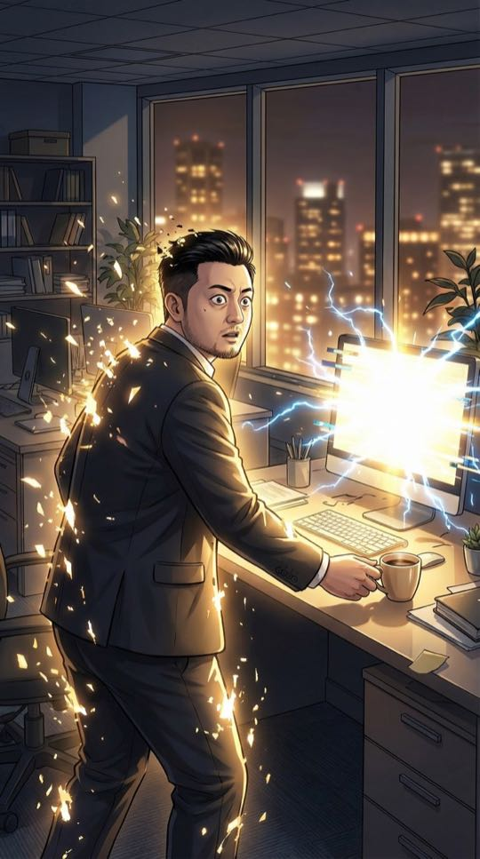
伸手去够咖啡杯的瞬间——
眼前一白。不是灯闪了。是整个世界在闪。
我甚至没来得及喊出声。
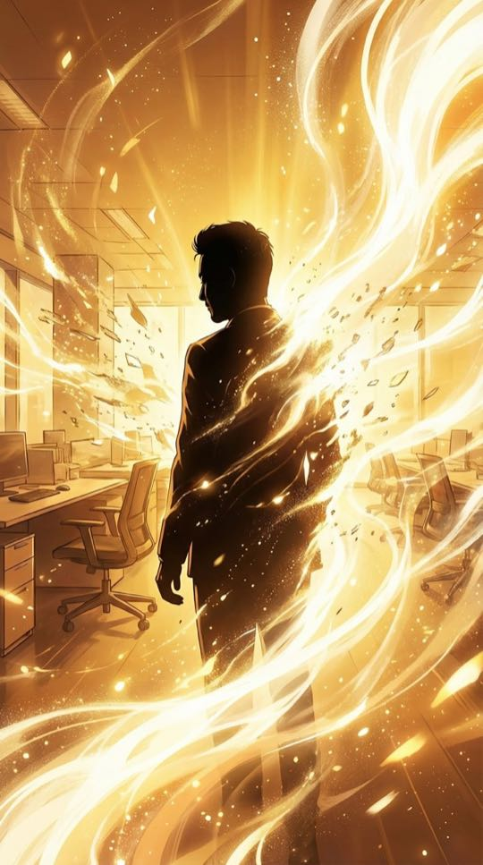
意识消散前最后一个念头：
"融资PPT……还没保存……"
—— 异世界·商洲·破铜镇·垃圾堆 ——
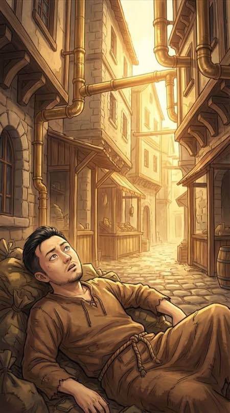
疼。
后脑勺传来剧烈的痛感——像是被人从三楼扔下来又砸在了垃圾堆里。
等等，我确实躺在垃圾堆里。
而且这不是我的办公室。
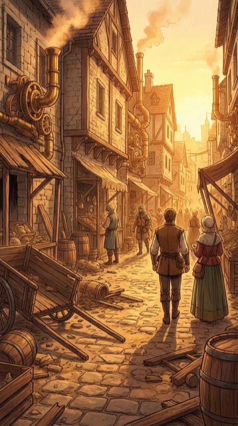
歪歪斜斜地站起来，入眼的是一条破败到极致的街道。石砌的房子，木头的招牌，空气里弥漫着烤红薯和牛粪混合的独特芳香。
而且——我身上穿的是一件麻布长袍。
"……我的西装呢？"
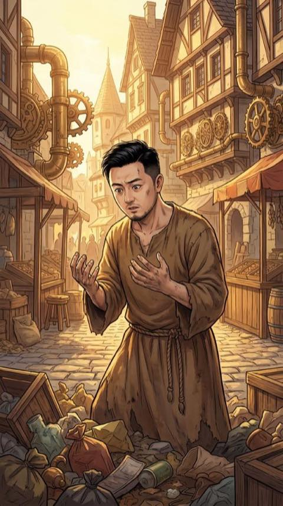
正当我怀疑自己是不是加班猝死、正在走投胎流程的时候——
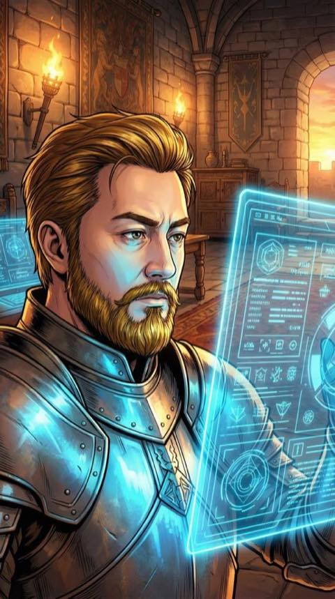
【商业系统 V0.1 (Beta)】初始化完成
绑定宿主：朱江
系统等级：Lv.0（乞丐）
核心技能：市场洞察（已激活）
状态：饥饿 / 迷茫 / 一无所有
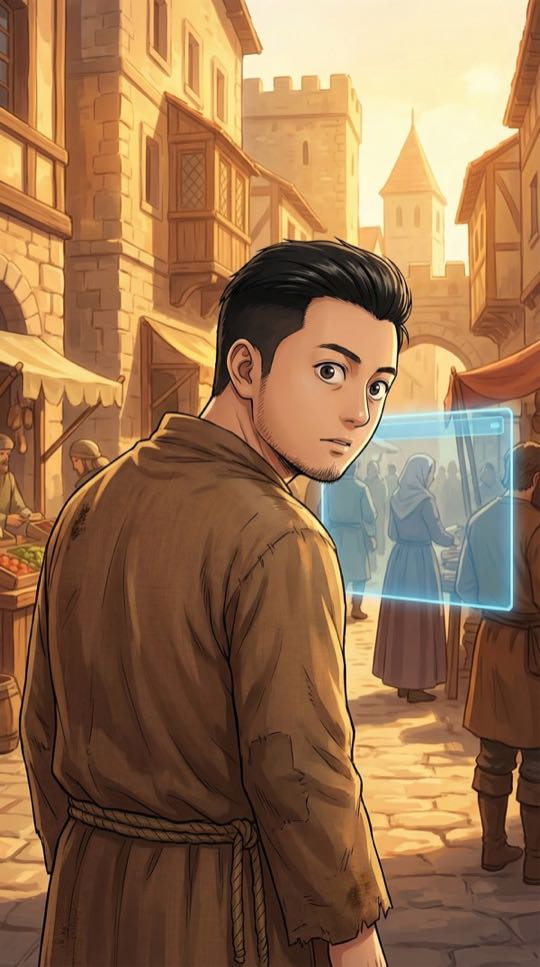
当前资产：🪙 1铜币
商洲排名：倒数第一（共1,247,832名注册商人）
信用评级：无（新人无信用记录）
说实话，我也没见过这么穷的宿主。上一任好歹有三枚铜币。
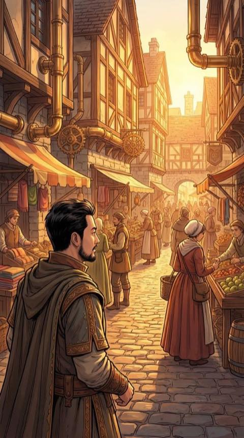
深吸一口气。好消息是：我还活着。坏消息是：我活在了一个连证监会都没有的世界。
但商业嗅觉告诉我——有人的地方就有市场，有市场就有机会。
先搞清楚状况。
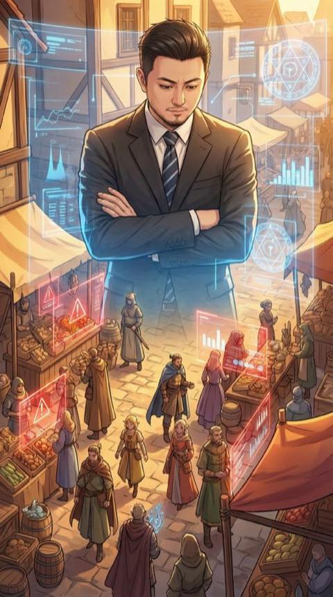
【市场洞察】扫描中……
⚠️ 异常：全镇商品定价偏离真实价值 -70%
⚠️ 原因：单一商会垄断定价权
⚠️ 垄断方：赵氏商铺（镇内唯一批发渠道）
检测到严重的市场操纵行为。建议宿主向有关部门举报。
……哦等等，这里没有有关部门。
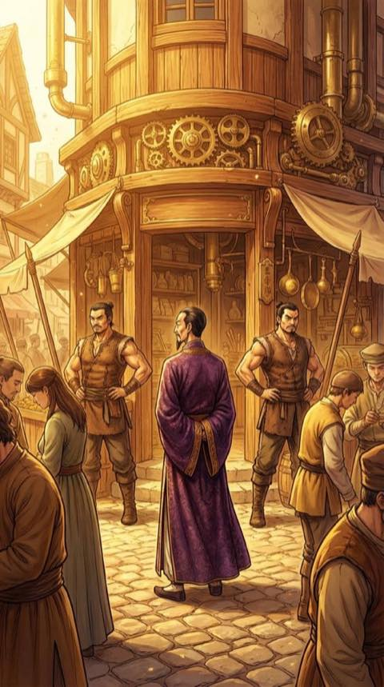
街对面就是"赵氏商铺"，三层楼高，门口两个膀大腰圆的护卫。
旁边路过的小贩都下意识低头快步走过。
垄断者。在任何世界都长一个样。
—— 铜花杂货铺 · 全镇最穷的店 ——
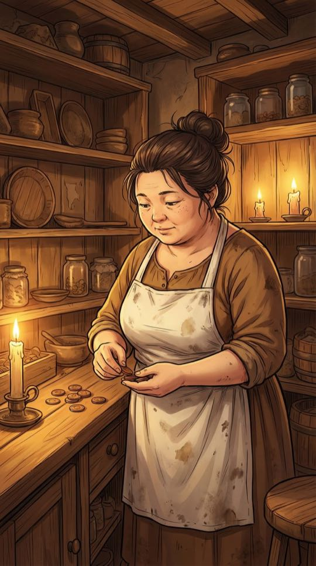
在被三家店赶出去之后，我终于找到了一家愿意和我说话的——
铜花杂货铺。小到只能站三个人，货架上的东西比我口袋里的钱还少。
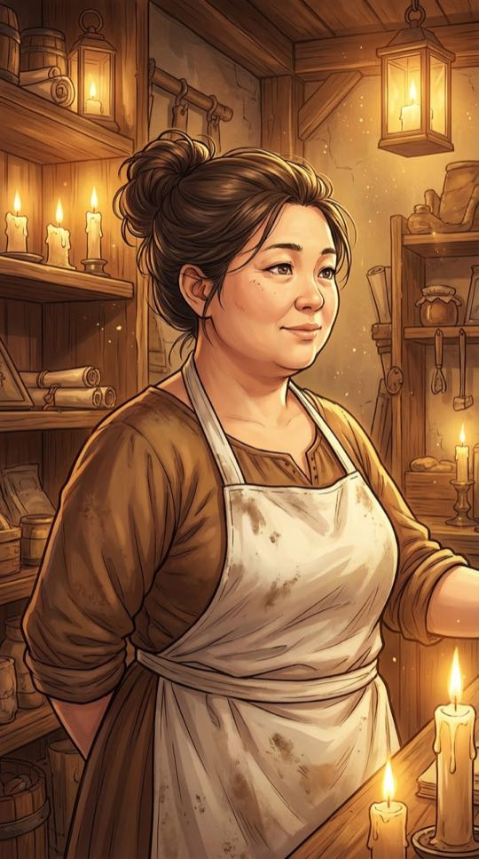
"你要买啥？"老板娘抬头看了我一眼，胖乎乎的圆脸上写着"别浪费我时间"。
围裙上沾着不知道什么年代的污渍，头发随便盘了个髻，但眼睛亮得像两颗铜币。
这位大姐一看就是做生意的人。
🪙 DECISION-1：第一桶金策略
A. 找铜花合作——用现代商业思维说服她合伙
B. 利用系统漏洞直接套利——快但风险高
C. 先打工攒本金——稳但太慢
✅ 我的选择：A——找铜花合作
理由：在陌生世界，第一个愿意跟你说话的人就是最重要的盟友。
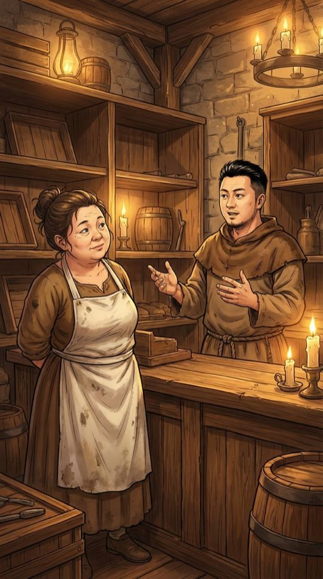
"大姐，你知道你卖的草药在邻镇值多少钱吗？"
我掏出系统给我的数据——当然，在她看来我是掰着手指头算的。
"你这个草药，赵掌柜收购价3铜币一捆，但邻镇药铺零售价是15铜币。你被压了80%的利润。"
"我给你出一个方案——我来跑邻镇的渠道，打通供应链，你出货我出力，利润五五分。"
铜花听完，表情像吃了一颗话梅又被雷劈了。
"……你说的那个'供应链'是什么妖术？"
恭喜宿主开启第一轮融资
融资规模：5铜币
估值：0.000001
建议宿主在BP上写"赛道空间无限"。
另外，建议隐藏您的财务状况。如果投资人知道您全部身家只有1铜币，这笔融资大概率黄了。
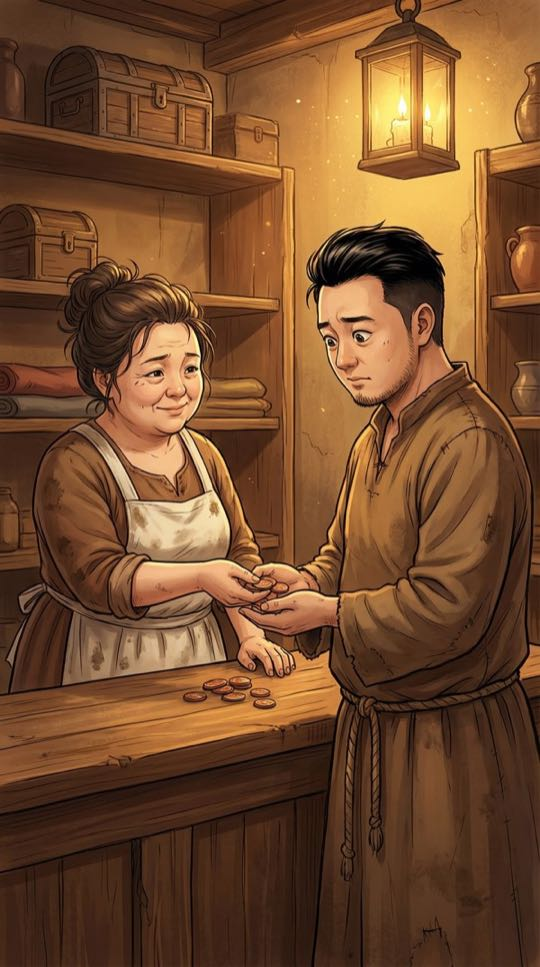
铜花把五枚铜币一枚一枚放到柜台上，每放一枚脸就抽搐一下。
"小伙子，我不知道你说的那些词是什么意思……但你这双眼睛不像骗子。"
她叹了口气："赔了你得还我。连本带利。"
"大姐放心。"我攥紧了那五枚铜币。在任何世界，信任都是最贵的货币。
—— 邻镇·跑商路上 ——
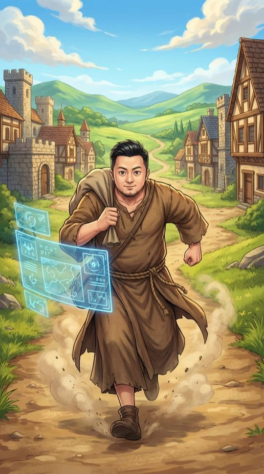
天还没亮我就出发了。背着一捆铜矿石，兜里揣着5枚铜币和满脑子的定价策略。
系统在旁边像个唠叨的导航仪，全程提供实时情报。
说实话——这感觉比融资路演刺激多了。
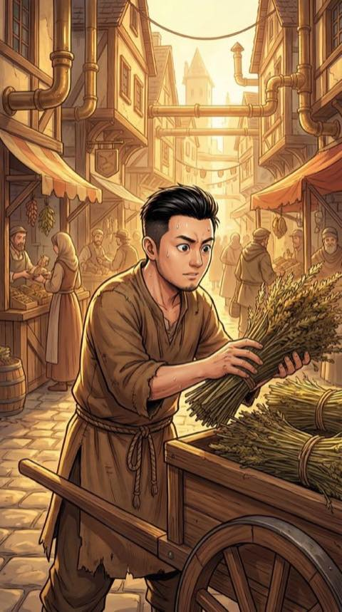
在邻镇草药铺谈判了半个时辰。对方一开始给我脸色看——直到我精确报出了他从产地进货的成本价。
他的脸绿了。
"你……你怎么知道的？"
"商业机密。"我微笑。系统在旁边偷笑。
—— 回到破铜镇 · 铜花杂货铺 ——
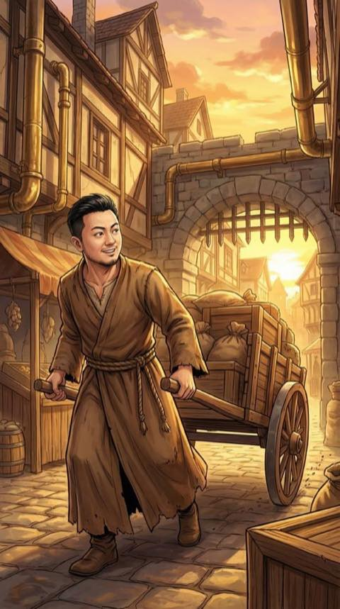
扛着满满一车货物回到破铜镇的时候，太阳正好挂在城门上方。
我觉得自己像个凯旋的将军——虽然阵地只是一间快倒闭的杂货铺。
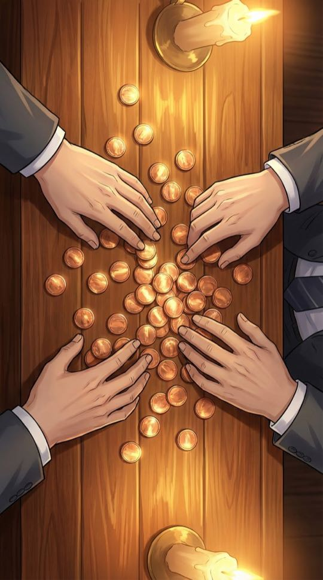
五十枚铜币哗啦啦倒在柜台上，在烛光下闪着暖黄色的光。
铜花盯着那堆铜币，表情像是在看一个不可能存在的生物。
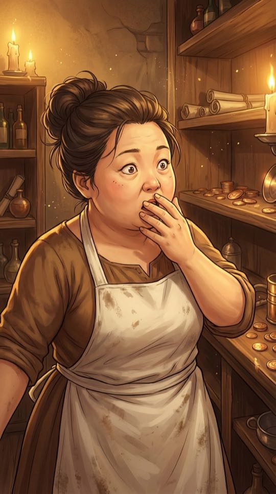
铜花的嘴巴张了足足有三秒钟才合上。
"你……你该不会是抢的吧？"
"大姐，这叫供应链套利。正经生意。"
"那个……供什么链？你说人话行不行？"
铜花一把抓住我的手臂，眼睛瞪得比铜币还圆：
"你到底是什么人？！"
"……一个加班猝死穿越过来的创业者。"
"？？？"
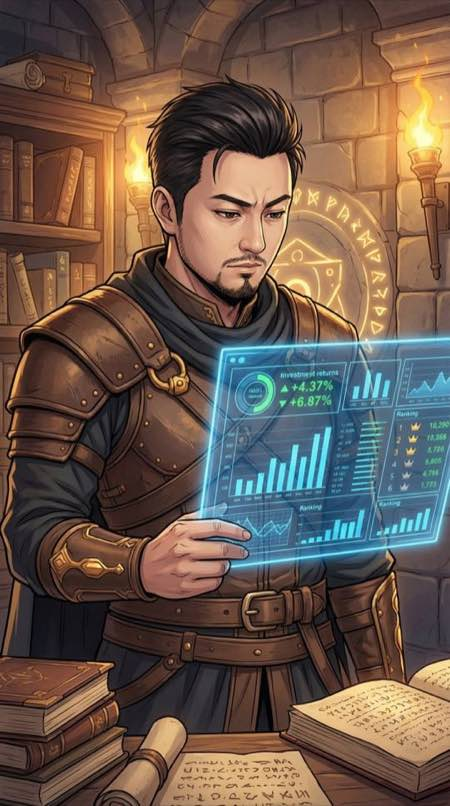
恭喜宿主完成首笔交易
投资回报率：1000%
商洲排名变化：倒数第1 → 倒数第987,653
虽然您仍然很穷，但至少不是最穷的了。建议发个朋友圈庆祝一下。
……哦对，这里没有朋友圈。您也没有朋友。
—— 赵氏商铺 · 后堂 ——
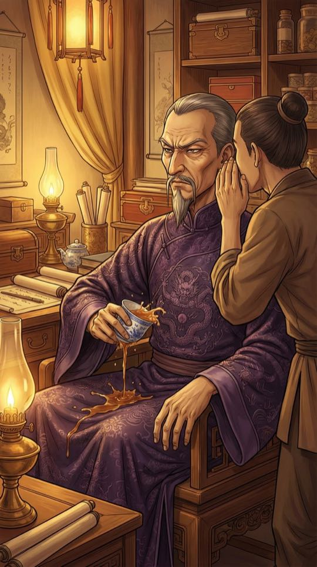
赵掌柜正品茶的时候，手下凑过来耳语了几句。
茶杯"咔嚓"一声碎了。上好的青瓷，跟他的心情一样——碎了一地。
"一个来路不明的穷光蛋……竟然绕过我做跨镇贸易？"
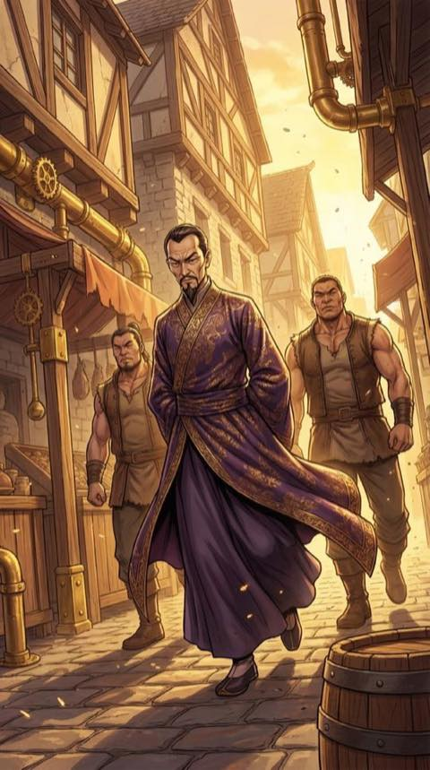
下午。赵掌柜带着两个打手直奔铜花杂货铺。
紫色绸缎长衫在风中猎猎作响，鹰钩鼻上的怒气几乎要物理溢出。
全镇的人都在偷偷看，但没人敢出声。
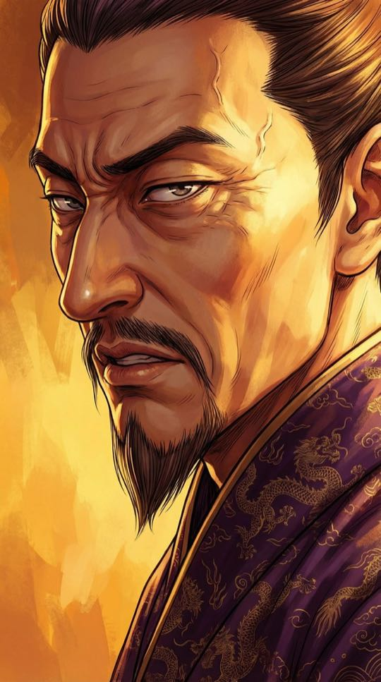
"小子。"赵掌柜的声音阴恻恻的，"破铜镇的生意，姓赵。你是不是搞不清楚状况？"
他身后的两个打手把指节捏得咔咔响。
⚔️ DECISION-2：面对威胁
A. 正面硬刚——当众揭露他的垄断定价
B. 假装认怂，暗中布局
C. 带着钱跑路
✅ 我的选择：A——正面硬刚
菩萨心肠，霹雳手段。既然要做生意，就不能一开始就跪着。
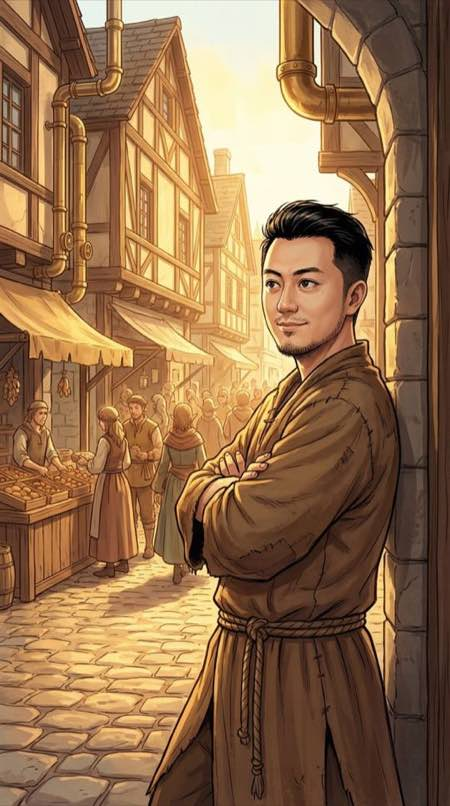
我从铜花铺子里走出来，胳膊抱在胸前，嘴角微微上扬。
"赵掌柜，你说破铜镇的生意姓赵——"
"但破铜镇的老百姓不姓赵啊。"
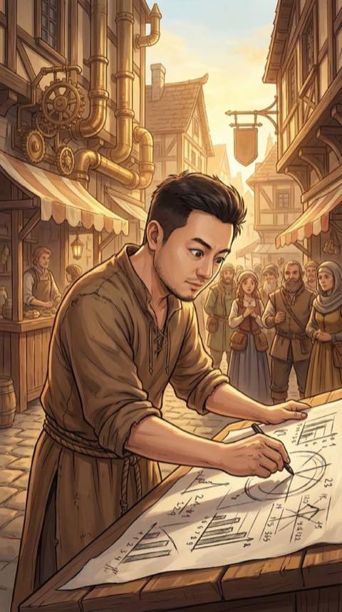
我早就准备好了。一块白布铺在地上，上面用炭笔画满了数据——
赵氏商铺的收购价 vs 邻镇真实市价。
每一种商品，差价多少，赵掌柜赚了多少，老百姓亏了多少。
清清楚楚，一目了然。
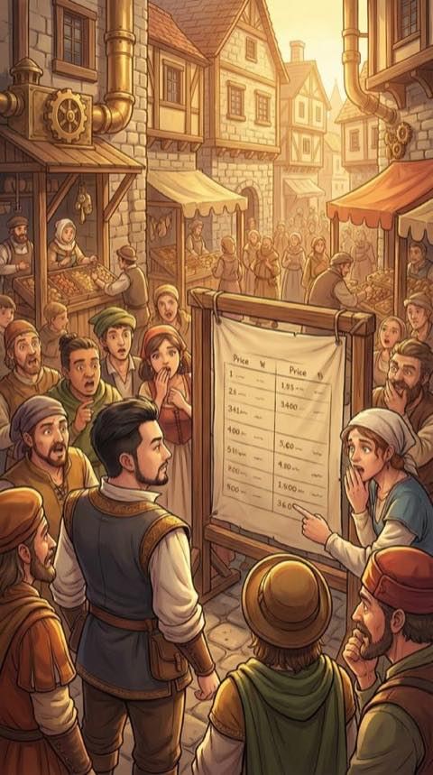
围观的人越来越多。
"草药差三倍？！""铜矿石居然值这么多？！""怪不得日子越过越穷！"
嗡嗡嗡的议论声像蜂群一样扩散开来。
几个年轻商贩开始朝赵掌柜的方向投来不善的目光。
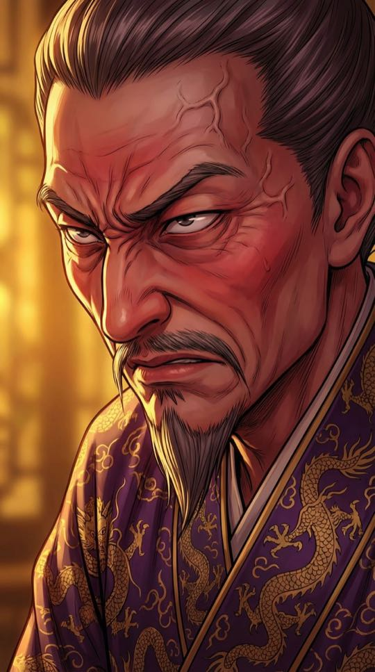
赵掌柜的脸已经扭曲到像一块被拧干的抹布。
山羊胡一抖一抖的，青筋从额头一直爬到太阳穴。
"你……你这是造谣！"
"数据不会说谎。"我指了指白布，"每一个数字，都可以验证。"
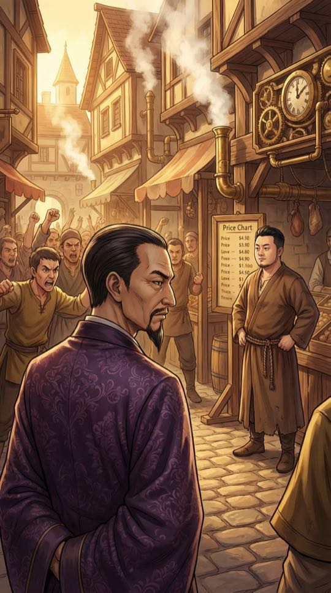
赵掌柜扫了一眼周围越来越敌意的人群，终于意识到——今天在这里动手不划算。
他狠狠瞪了我一眼，甩袖而去。
但临走时丢下一句话：
"小子，你等着。"
—— 当晚 · 铜花杂货铺 · 灯火通明 ——
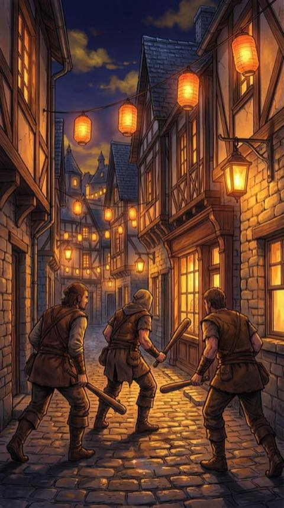
赵掌柜不会善罢甘休。系统的"威胁预测"模块清楚地告诉我——今晚他会派人来砸铺子。
不是可能。是一定。
🎯 DECISION-3：危机应对
A. 用系统预判提前转移货物，设陷阱反杀
B. 去找镇长告状
C. 以牙还牙，砸回去
✅ 我的选择：A——预判+陷阱
黑客思维：永远在对手行动之前，先看穿他的操作系统。
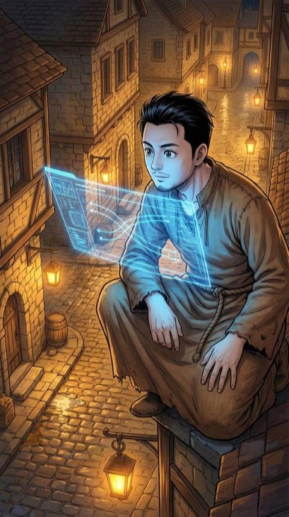
【威胁预测】分析完成
目标行动：赵氏打手×3人
预计时间：子时（23:00-01:00）
攻击路线：后巷→侧门
推荐方案：货物转移+陷阱布置
宿主当前战斗力：0
建议：不要硬碰硬。用脑子。
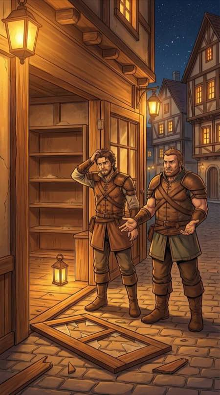
子时刚过。三个黑影如期而至。
木棍撞开铜花杂货铺的侧门——
空的。货架空空如也，连一粒灰尘都没有。
"人呢？货呢？"
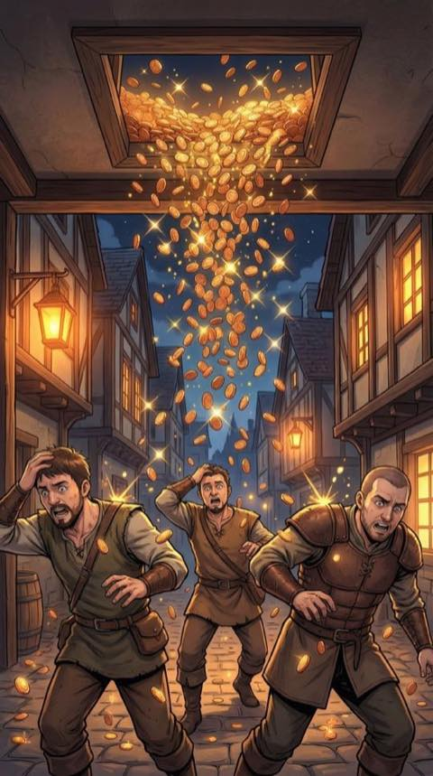
他们还没来得及反应——
"哗啦啦啦啦——"
天花板的暗门打开了。五十六枚铜币（对，我全部家当）加上铜花借来的一百枚道具铜币，化作一道金色瀑布从天而降。
打手们被铜币雨浇了个正着，脚底一滑，全部摔了个四仰八叉。
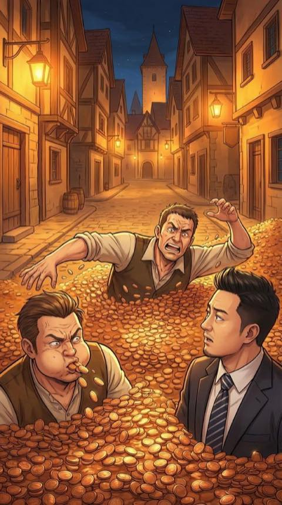
三个五大三粗的打手埋在铜币堆里，一个试图"游泳"，一个往外吐铜币，还有一个满脸铜币印子，茫然地望着天花板的窟窿。
我站在街对面，双手抱胸。
"兄弟们，这叫'铜币雨'——破铜镇限定天气预报。"
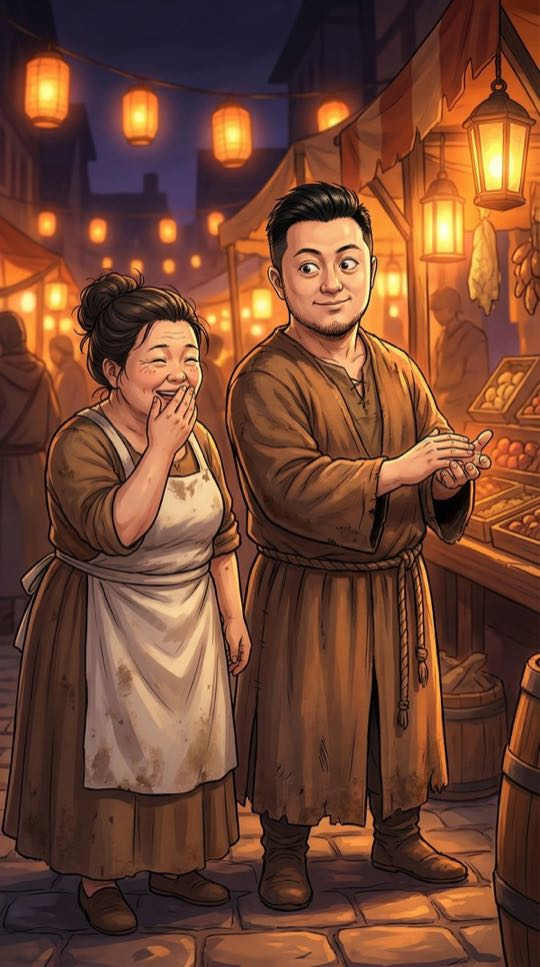
铜花笑到蹲在地上站不起来，捂着嘴差点把围裙都笑掉了。
"哈哈哈哈……你这个……哈哈哈这个'供应链'也太搞笑了哈哈哈……"
"大姐，这叫反向营销。现在全镇都知道赵掌柜派人来砸铺子，明天我们的生意会翻倍的。"
"……你说的话我一句都听不懂，但我信你！"
—— 深夜 · 月光下 · 收拾战场 ——
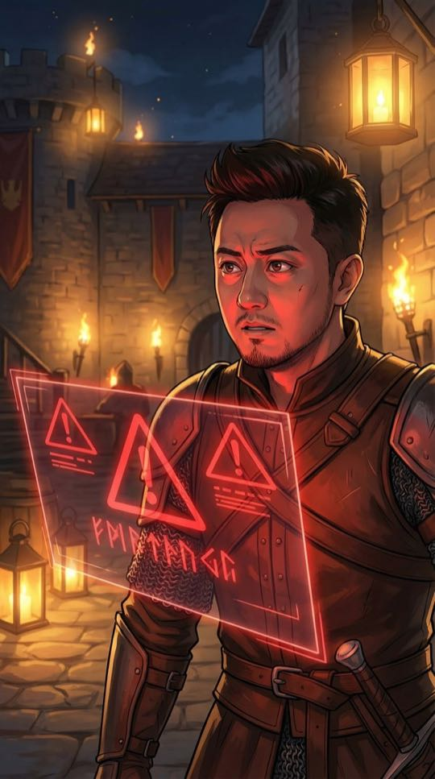
⚠️ 紧急警告 ⚠️
检测到 S级商人「银狐」正在前往破铜镇
预计到达：3天后
威胁等级：你完了
━━━━━━━━━━━━
「银狐」实力评估：
资产：500,000+金币
信用评级：SSS
控制区域：三座大城市
━━━━━━━━━━━━
建议：快跑。
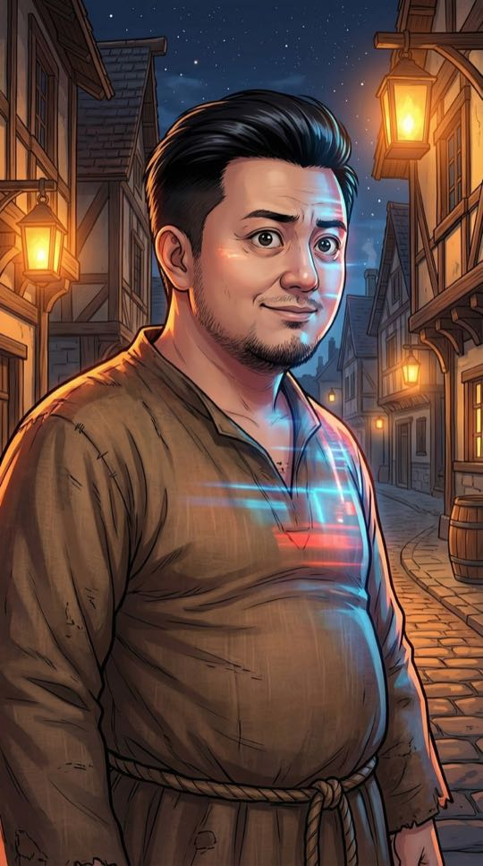
看着系统弹出的红色警告，我脸上的笑容僵住了。
赵掌柜只是个镇级BOSS。银狐——那是大区级别的。
"系统，你能不能说点好听的？"
好的。您死得会很有排面。
预计有三家商会派代表来围观您的破产清算。届时场面会非常壮观。
建议宿主提前准备一段体面的告别演说。
我深吸一口气，看向破铜镇的月亮。
穿越第一天。起始资金1枚铜币。现在有了56枚铜币、一个忠诚的合伙人、一个损到极点的AI系统，和一个即将碾过来的S级boss。
在我创业的时候，也没有比这更差的开局了。
但我熬过来了。
手指无意识地摩挲着口袋里的铜币。
"银狐是吧……"我喃喃自语，"不管你是谁——商场上没有什么是不可以谈的。"
第一章 · 降临 — 完
朱江 × 商业系统 V0.1(Beta) × 铜花
资产：1铜币 → 56铜币 | 排名：倒数第一 → 倒数第987,653
⚠️ S级商人「银狐」正在接近……第二章：银狐来袭
向死而生 — Trinity V3 · EXP-928